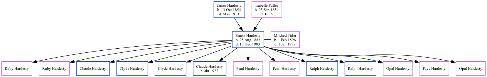

Ernest Roy Hardesty 1888 - 1983
[ Home ] | [ Surnames Index ] | [ Family History ]The child of James Hardesty and Isabelle Fuller, was born in Chester, Kansas on Aug 25, 18881,2,3,4,5,6,7 and married Mildred Titler (with whom he had 13 children: Ruby, Ruby J, Claude E, Clyde, Clyde E, Claude, Pearl L, Pearl L, Ralph E, Ralph E, Opal M, Faye M and Opal) in Longmont, Boulder, Colorado, USA on Sep 30, 1914.
During his life, he was living in Liberty, Republic, Kansas on Mar 1, 18954; in Boulder in 19188; in Precinct 1, Boulder, Colorado in 19201; in Johnstown, Weld, Colorado in 19302 and in 19353; in Johnstown, Weld, Colorado on Apr 1, 19403; and in Weld6.
He died on Dec 13, 1983 in Johnstown, Weld, Colorado5,7 (age at Death: 95) and was buried in Longmont, Boulder County, Colorado after Dec 13, 19837.
Parents
- James Franklin was born on Oct 13, 1854
- Isabelle M was born on Sep 5, 1854
Children
- Ruby
- Ruby J
- Claude E
- Clyde
- Clyde E
- Claude was born c. 1922
- Pearl L
- Pearl L
- Ralph E
- Ralph E
- Opal M
- Faye M
Citations
- 1920 United States Federal Census Ancestry.com Operations Inc (Age: 31; Marital Status: Married; Relation to Head of House: Head)
- 1930 United States Federal Census Ancestry.com Operations Inc (Age: 41; Marital Status: Married; Relation to Head of House: Head)
- 1940 United States Federal Census Ancestry.com Operations, Inc. (Age: 51; Marital Status: Married; Relation to Head of House: Head)
- Kansas State Census Collection, 1855-1925 Ancestry.com Operations Inc
- Social Security Death Index Ancestry.com Operations Inc
- U.S., World War I Draft Registration Cards, 1917-1918 Ancestry.com Operations Inc
- Web: Colorado, Find A Grave Index, 1861-2011 Ancestry.com Operations, Inc.
- U.S. City Directories, 1821-1989 (Beta) Ancestry.com Operations, Inc.
Family Tree
Data (GEDCOM) maintained by Jay Weston Hannah, Omaha, Nebraska, USA.
Website generated by ged2site. Last updated on Jun 18, 2024.